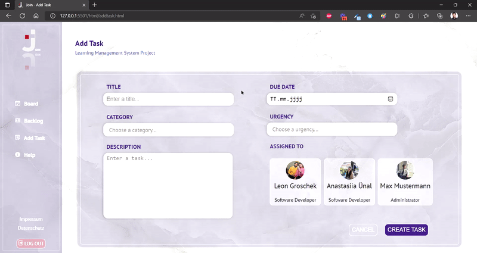
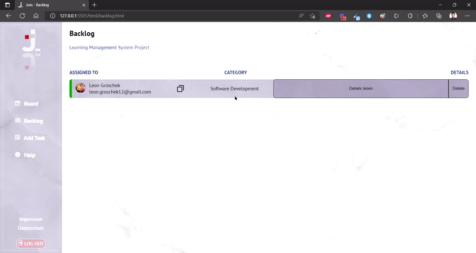
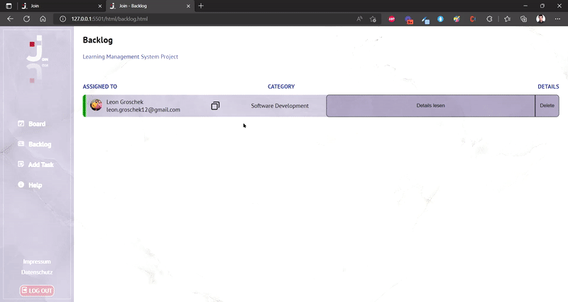
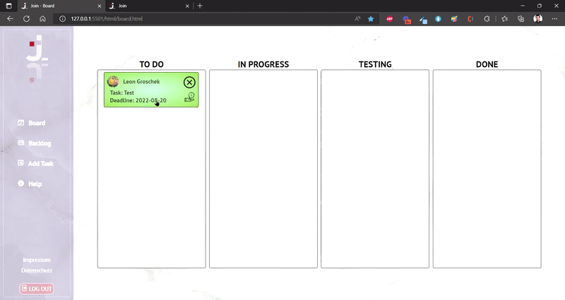

Do you need help?
In this Add Task you can create a Task for your employee. After you created a task, you can choose whether you want to create an other task or you want to go to Backlog.

Once you have decided on the backlog, you can see that the colors of the tasks on the left side are chosen depending on the category. You can hover over the name and email. These will be displayed to you again. Especially helpful for responsive view.
At the copy icon you can also copy the email. You can see the category, delete the task and open the task.

If you copy the email, you will get a toast at the bottom right. When you open the task, you can make changes there and confirm at the bottom with the "edit this task" button. After that you will also get a toast at the bottom right.

Here you can move the task back and forth in the board into different processes. By default, all tasks are loaded in "TO DO". If you click on the hand icon, you open the task and you can see all the details again. If you want to send an email to the employee, you can do so by simply clicking on the email.
